vignettes/extending_ebnm.Rmd
extending_ebnm.RmdThe ebnm package, in addition to providing implementations of several commonly used priors (normal, Laplace, etc.), was designed to be easily extensible so that researchers are not limited by the existing options (despite the fact that a wide variety of options are available!).
In this vignette, we illustrate how to extend ebnm
by creating a custom EBNM solver in the style of other
ebnm functions such as ebnm_normal() and
ebnm_point_laplace(). In this illustration, we implement an
EBNM solver for the family of scaled (Student’s) t priors. (As
of this writing, it is not one of the prior families included in
ebnm.) It is formally defined next.
The empirical Bayes normal means (EBNM) model with scaled t prior is:
\[\begin{aligned} x_i &\sim \mathcal{N}(\theta_i, s_i^2), \\ \theta_i &\sim g \in \mathcal{G}_t, \end{aligned}\]\(\mathcal{G}_t\) is the family of scaled \(t\) priors and is defined as follows:
\[\begin{equation} \mathcal{G}_t := \{g: g = \sigma t_\nu; \sigma > 0, \nu > 0\}, \end{equation}\]
in which \(t_{\nu}\) is the t distribution with \(\nu\) degrees of freedom. Fitting the prior therefore involves estimating two parameters: the scale parameter, \(\sigma\), and the degrees of freedom, \(\nu\).
For background and notation, please see the ebnm paper.
In general, to fit an EBNM model one needs to: 1. Specify the prior
family \(\mathcal{G}\); 2. Given
observations \(x_i\) with standard
errors \(s_i\), estimate \(g \in \mathcal{G}\); 3. Given an estimate
\(\hat{g} \in \mathcal{G}\), compute
posterior means \(\mathbb{E}(\theta_i \mid
x_i, s_i, \hat{g})\) and/or other quantities of interest. In the
following sections, we show how we might implement these three steps for
the prior family \(\mathcal{G}_t\). We
then incorporate these implementations into a new function
ebnm_t() that uses the common interface supplied by the
ebnm package. After checking our new function using the
convenient checker ebnm_check_fn(), we demonstrate that, as
expected, our new function performs better than the family of normal
priors when the “true means” \(\theta_i\) are simulated from a scaled
t distribution.
Apart from using the common ebnm interface, we do
not have specific requirements for ebnm-style solvers
to be incorporated into the ebnm package. In general,
however, we prefer that code styling adheres to the Tidyverse style guide. Further,
we expect functions to be well-tested. At minimum, functions should pass
the tests in ebnm_check_fn(). Additional unit tests are
strongly encouraged; ebnm runs unit tests on all
currently implemented prior families using the testthat
package.
The first step in implementing a solution to the EBNM problem with
scaled t prior is to define a data structure for the priors in
our prior family. In some cases, an existing data structure can be used.
For example, ebnm_normal(),
ebnm_point_normal(),
ebnm_normal_scale_mixture(), and
ebnm_point_mass() all use the "normalmix"
class, which is borrowed from the ashr package. Here,
we will define a new class.
ebnm uses these data structures in two ways: to give
information about the fitted prior \(\hat{g}\) (via the fitted_g
field in the returned "ebnm" object); and to initialize
solutions (via the g_init argument). If one would like to
be able to arbitrarily initialize the solver, then the data structure
should include all information required to do so.
For the scaled t prior, we define a new class,
"tdist", that includes the scale and degrees of
freedom:
tdist <- function (scale, df) {
structure(data.frame(scale, df), class = "tdist")
}Next, we implement a function for estimating the two parameters
specifying the prior. This estimation is typically done by maximizing
the likelihood. There are many possible ways to perform this
maximization; for an overview of the many R packages available for
solving optimization problems using various algorithms and implementing
various constraints, see the CRAN task
view on optimization. Solvers in the ebnm package
include an optmethod argument; when estimating parametric
priors (e.g., normal or point-Laplace), this argument allows the user to
choose among three general-purpose optimization methods: the Newton-type
algorithm implemented in the base R nlm() function; the
L-BFGS-B algorithm implemented in the base R optim()
function; and the trust region algorithm implemented in the
trust package. Further, the user can choose whether to
use analytic expressions to evaluate gradients and/or Hessians or
whether to estimate them using numerical methods. In general, we found
that it was often fastest to evaluate gradients analytically but to
allow Hessians to be computed numerically. We thus recommend including
the gradient for the log likelihood when it is straightforward to do
so.
Here, we will use the L-BFGS-B algorithm to maximize the log
likelihood since: 1. it doesn’t require installing any new packages; and
2. unlike nlm(), it allows us to constrain parameters
(recall that \(\nu\) and \(\sigma\) should always be greater than
zero). To avoid numerical issues, we set sensible lower and upper bounds
for both parameters (namely, \(\min_i s_i / 10
\le \sigma \le \max_i x_i\) and \(1 \le
\nu \le 1000\)). Our optimization function takes initial
parameter estimates as input and returns optimal values for the
parameters of interest:
opt_t <- function(x, s, sigma_init, nu_init) {
optim(
par = c(sigma_init, nu_init),
fn = function(par) -llik_t(x, s, par[1], par[2]),
method = "L-BFGS-B",
lower = c(min(s)/10, 1),
upper = c(max(x), 1e3)
)
}Notice that this function calls another function,
llik_t(), which is not yet implemented: this function will
compute the log likelihood at the current parameter estimates
par[1] and par[2]. Since optim()
performs minimization by default, we take the negative of the log
likelihood.
The log likelihood involves an integral or convolution over the unknown means:
\[\begin{equation} \log p(\mathbf{x} \mid g, \, \mathbf{s}) = \sum_{i=1}^n \textstyle \log \int p(x_i \mid \theta_i, s_i) \, g(\theta_i) \, d\theta_i \end{equation}\]
Inside the integral, we have the product of a normal distribution and
the prior, which in our case is a t distribution. We compute
this integral numerically using the built-in integrate()
function:
llik_t <- function(x, s, sigma, nu) {
llik_one_obs <- function(x, s) {
integrate(
f = function(theta) {
dnorm(x - theta, sd = s) * dt(theta / sigma, df = nu) / sigma
},
lower = -Inf,
upper = Inf
)$value
}
vllik <- Vectorize(llik_one_obs)
return(sum(log(vllik(x, s))))
}Notice that we have not included the gradient of the log likelihood
in our optimization function. Indeed, the gradient is difficult to
compute in this case, so we allow optim() to estimate it
numerically. If, however, an efficient expression for computing the
gradient were available (e.g., by explicitly calculating the gradient or
using a package that performs automatic differentiation), we could
implement it as follows (replacing the numerical estimation of the
gradient using numDeriv with this more efficient
function):
opt_t_grad <- function(x, s, sigma_init, nu_init) {
optim(
par = c(sigma_init, nu_init),
fn = function(par) -llik_t(x, s, par[1], par[2]),
gr = function(par) -grad_t(x, s, par[1], par[2]),
method = "L-BFGS-B",
lower = c(min(s) / 10, 1),
upper = c(max(x), 1e3)
)
}
grad_t <- function(x, s, sigma, nu) {
numDeriv::grad(function(par) llik_t(x, s, par[1], par[2]), c(sigma, nu))
}The other key computation required to fit the EBNM model is the computation of various statistics (means, variances, etc.) from the posterior distribution of the “true means” given the prior we estimated. From Bayes’ rule, the posterior distribution for the ith unknown mean is
\[\begin{equation} p(\theta_i \mid x_i, s_i, g) \propto g(\theta_i) \, p(x_i \mid \theta_i, s_i), \end{equation}\]
In this example, we summarize the posterior by the mean, standard deviation and second moment:
post_summary_t <- function(x, s, sigma, nu) {
samp <- post_sampler_t(x, s, sigma, nu, nsamp = 1000)
return(data.frame(
mean = colMeans(samp),
sd = apply(samp, 2, sd),
second_moment = apply(samp, 2, function(x) mean(x^2))
))
}The function requires a function post_sampler_t to draw
random samples from the posterior distribution. While drawing
independent samples is difficult, we can easily design an MCMC scheme to
approximately draw samples from the posterior. We implement this using
the mcmc package:
# install.packages("mcmc")
library(mcmc)
post_sampler_t <- function(x, s, sigma, nu, nsamp) {
sample_one_theta <- function(x_i, s_i) {
lpostdens <- function(theta) {
dt(theta/sigma, df = nu, log = TRUE) - log(sigma) +
dnorm(x_i - theta, sd = s_i, log = TRUE)
}
metrop(lpostdens, initial = x_i, nbatch = nsamp)$batch
}
vsampler <- Vectorize(sample_one_theta)
return(vsampler(x, s))
}Note this is most likely not the most efficient way to compute posterior summaries, but we tried to keep our implementation simple for purposes of illustration.
We have now implemented the key computations for our new EBNM solver.
We will call this new solver ebnm_t() to be consistent with
other ebnm functions (ebnm_normal(),
etc.).
The inputs should be the same as the other ebnm
functions. We will also use the same defaults. We can ignore parameters
that are not relevant (here, optmethod and
control).
For simplicity, we will ignore the output parameter and
just return everything (the data, the posterior summaries, the fitted
prior, the log likelihood, and the posterior sampler). See
help(ebnm) for further details about the expected structure
of the returned "ebnm" object.
Here’s the new function:
ebnm_t <- function(x,
s = 1,
mode = 0,
scale = "estimate",
g_init = NULL,
fix_g = FALSE,
output = ebnm_output_default(),
optmethod = NULL,
control = NULL) {
# Some very basic argument checks.
if (mode != 0) {
stop("The mode of the t-prior must be fixed at zero.")
}
if (scale != "estimate") {
stop("The scale of the t-prior must be estimated rather than fixed ",
"at a particular value.")
}
# If g_init is provided, extract the parameters. Otherwise, provide
# reasonable initial estimates.
if (!is.null(g_init)) {
sigma_init <- g_init$scale
nu_init <- g_init$df
} else {
sigma_init <- sqrt(mean(x^2))
nu_init <- 10
}
# If g is fixed, use g_init. Otherwise optimize g.
if (fix_g) {
sigma <- sigma_init
nu <- nu_init
llik <- llik_t(x, s, sigma, nu)
} else {
opt_res <- opt_t(x, s, sigma_init, nu_init)
sigma <- opt_res$par[1]
nu <- opt_res$par[2]
llik <- -opt_res$value
}
# Prepare the final output.
return(structure(list(
data = data.frame(x = x, s = s),
posterior = post_summary_t(x, s, sigma, nu),
fitted_g = tdist(scale = sigma, df = nu),
log_likelihood = llik,
post_sampler = function (nsamp) post_sampler_t(x, s, sigma, nu, nsamp)
), class = c("list", "ebnm")))
}ebnm provides a function,
ebnm_check_fn(), that runs basic tests to verify that the
EBNM function works as expected. Let’s run the checks using a small,
simulated data set:
Let’s illustrate the use of our new EBNM function on a data set in which the (unobserved) means are simulated from a t distribution with a scale of 2 and 5 degrees of freedom:
We will compare the use of the t prior with a normal prior,
which is implemented by ebnm_normal().
normal_res <- ebnm_normal(x, s = 1)
t_res <- ebnm_t(x, s = 1)You may have noticed that the call to ebnm_t() took
longer than the call to ebnm_normal(). That is expected
because the computations with the t distribution are more
complex, and we did not put a lot of effort into making the computations
efficient.
Let’s compare the two results:
plot(normal_res, t_res)
Most strikingly, ebnm_t() shrinks the large values less
aggressively than ebnm_normal(). The fit with the \(t\) prior also resulted in slightly more
accurate results overall:
rmse_normal <- sqrt(mean((coef(normal_res) - theta)^2))
rmse_t <- sqrt(mean((coef(t_res) - theta)^2))
c(rmse_normal = rmse_normal, rmse_t = rmse_t)
# rmse_normal rmse_t
# 0.9498794 0.9397445Finally, the estimated prior is not far from the parameters used to simulate the data (\(\sigma = 2\), \(\nu = 5\)):
t_res$fitted_g
# $scale
# [1] 1.682766
#
# $df
# [1] 3.813005
#
# attr(,"class")
# [1] "tdist"
# attr(,"row.names")
# [1] 1The following R version and packages were used to generate this vignette:
sessionInfo()
# R version 4.3.3 (2024-02-29)
# Platform: aarch64-apple-darwin20 (64-bit)
# Running under: macOS Sonoma 14.5
#
# Matrix products: default
# BLAS: /Library/Frameworks/R.framework/Versions/4.3-arm64/Resources/lib/libRblas.0.dylib
# LAPACK: /Library/Frameworks/R.framework/Versions/4.3-arm64/Resources/lib/libRlapack.dylib; LAPACK version 3.11.0
#
# locale:
# [1] en_US.UTF-8/en_US.UTF-8/en_US.UTF-8/C/en_US.UTF-8/en_US.UTF-8
#
# time zone: America/Chicago
# tzcode source: internal
#
# attached base packages:
# [1] stats graphics grDevices utils datasets methods base
#
# other attached packages:
# [1] ebnm_1.1-27 mcmc_0.9-8
#
# loaded via a namespace (and not attached):
# [1] sass_0.4.8 utf8_1.2.4 generics_0.1.3 ashr_2.2-66
# [5] lattice_0.22-5 digest_0.6.34 magrittr_2.0.3 RColorBrewer_1.1-3
# [9] evaluate_0.23 grid_4.3.3 fastmap_1.1.1 jsonlite_1.8.8
# [13] Matrix_1.6-5 mixsqp_0.3-54 purrr_1.0.2 fansi_1.0.6
# [17] scales_1.3.0 truncnorm_1.0-9 invgamma_1.1 textshaping_0.3.7
# [21] jquerylib_0.1.4 cli_3.6.2 rlang_1.1.3 deconvolveR_1.2-1
# [25] munsell_0.5.0 splines_4.3.3 withr_3.0.0 cachem_1.0.8
# [29] yaml_2.3.8 tools_4.3.3 SQUAREM_2021.1 memoise_2.0.1
# [33] dplyr_1.1.4 colorspace_2.1-0 ggplot2_3.5.0 vctrs_0.6.5
# [37] R6_2.5.1 lifecycle_1.0.4 fs_1.6.3 trust_0.1-8
# [41] ragg_1.2.7 irlba_2.3.5.1 pkgconfig_2.0.3 desc_1.4.3
# [45] pkgdown_2.0.7 bslib_0.6.1 pillar_1.9.0 gtable_0.3.4
# [49] glue_1.7.0 Rcpp_1.0.12 systemfonts_1.0.6 highr_0.10
# [53] xfun_0.42 tibble_3.2.1 tidyselect_1.2.0 knitr_1.45
# [57] farver_2.1.1 htmltools_0.5.7 labeling_0.4.3 rmarkdown_2.26
# [61] compiler_4.3.3 horseshoe_0.2.0